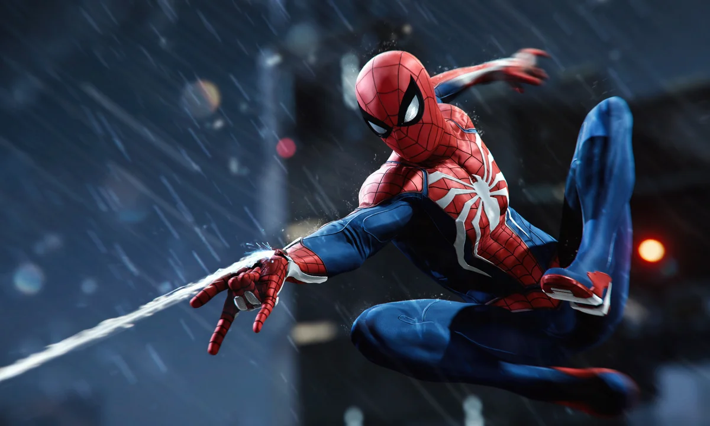

Gaming
adica jocuri
Dacă tot ați ajuns pe pagina asta, înseamnă că vreți să vedeți ce jocuri îmi mănâncă mie timpul și de ce le consider mai mult decât niște simple programe pe calculator.
Forza Horizon 6
O să încep cu cea mai recentă obsesie. Jocul este super proaspăt lansat și, sincer, îmi place la nebunie. Grafica e ce trebuie, mașinile se simt cum trebuie, iar lumea deschisă e pur și simplu un spectacol. Pentru că am petrecut destul de mult timp doar plimbându-mă și admirând peisajele, am făcut și o grămadă de screenshot-uri. Mai jos am lăsat câteva dintre pozele făcute de mine prin joc, ca să vedeți despre ce vorbesc.
GTA 5
Nu prea are nevoie de prezentare. Chiar dacă e un joc vechi, Los Santos rămâne probabil cel mai bine legat oraș dintr-un joc video. Povestea e interesantă, gameplay-ul e clasic, iar libertatea pe care o aveți în orașul ăla e greu de egalat chiar și de jocuri mult mai noi.

Spider-Man
Aici intră la pachet toate cele trei jocuri, pentru că mi se par printre cele mai bune când vine vorba de acțiune. Primul Spider-Man a setat standardul cu povestea lui Peter Parker și mecanica de mișcare prin New York. Miles Morales a venit cu un aer mai fresh și puteri noi, iar Spider-Man 2 le-a legat pe amândouă și a făcut totul mult mai dinamic, mai ales că puteți să schimbați personajele când vreți.
